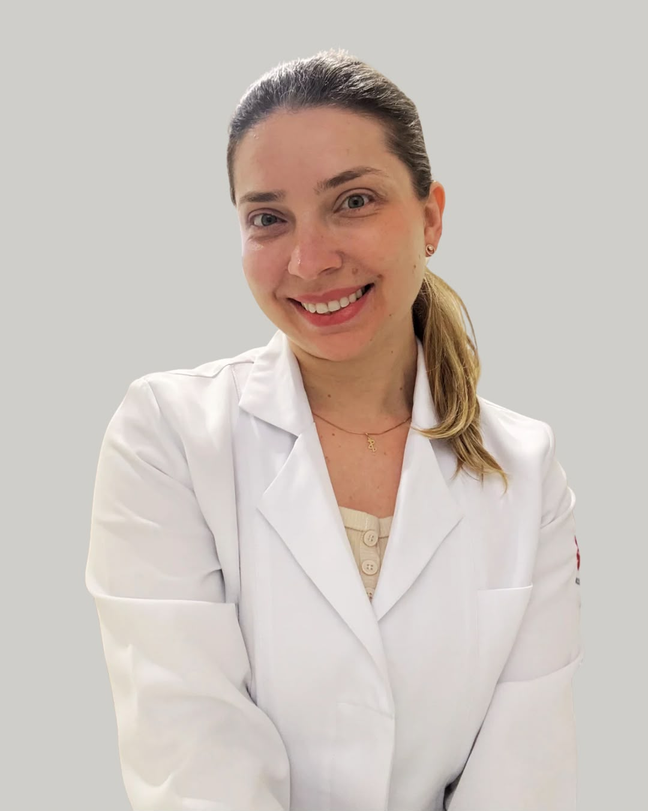

Dra. Alyne Brisotti
Pediatria
Médica Pediatra, com Residência Médica e Título de Especialista em Pediatria pela Sociedade Brasileira de Pediatria. Atua em consultório e pronto-socorro infantil, é laserterapeuta e realiza curso de pré-natal para auxiliar os pais no cuidado do recém-nascido nos primeiros meses de vida.
CRM-SP 200.976
RQE 102.987
Agendar com Dra. Alyne